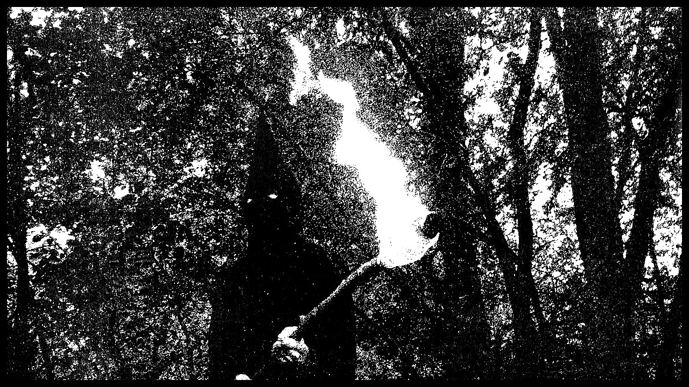

The vast and experimental world of Dungeon Synth music is quite different from the pop, rap, or any other popular music you might be used to. Artists from around the world focus on creating atmospheric/ambient music that ranges in tone from hopeful and positive to dark and malevolent.

While Dungeon Synth artists primarily focus on creating fantasy and/or medieval style music, there are far more styles and subgenres than one might assume. Ranging from things like Winter Synth, Keller Synth, Witch Synth, and even Dino Synth.
